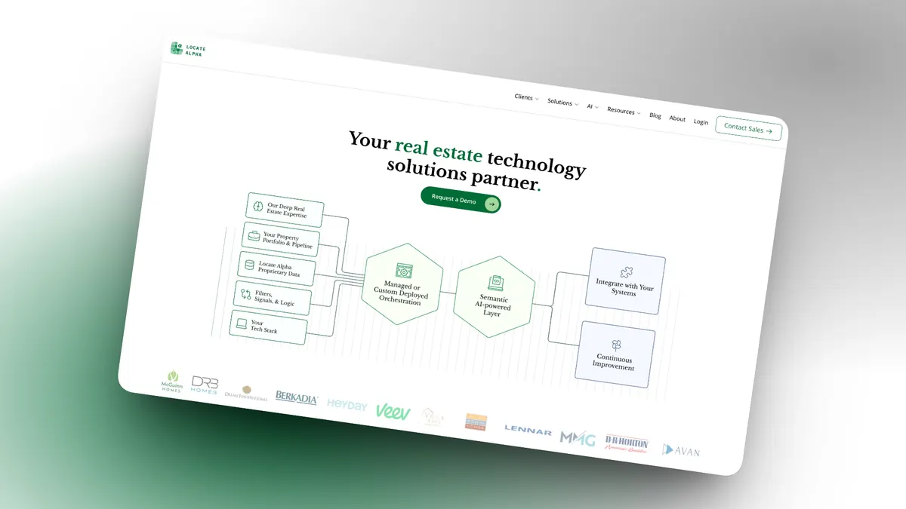
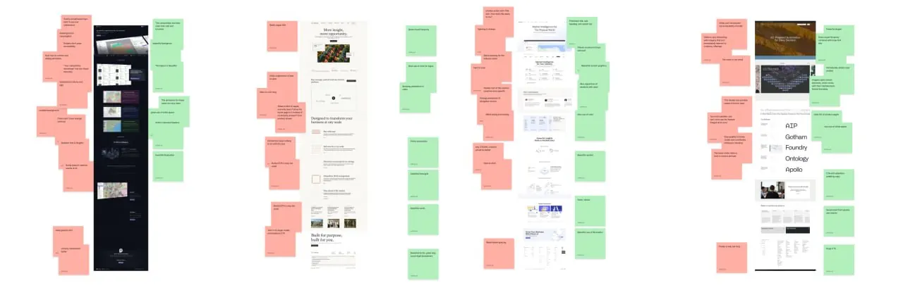
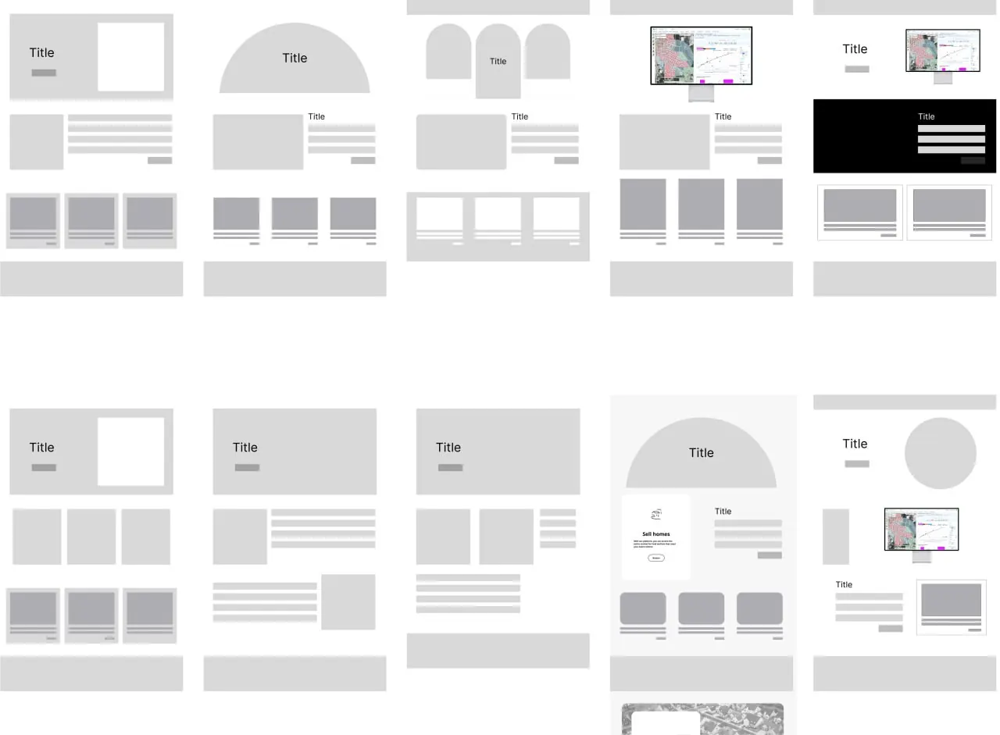
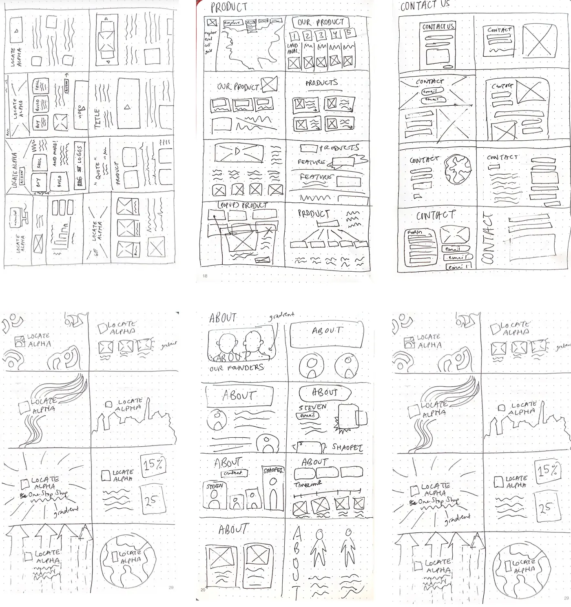
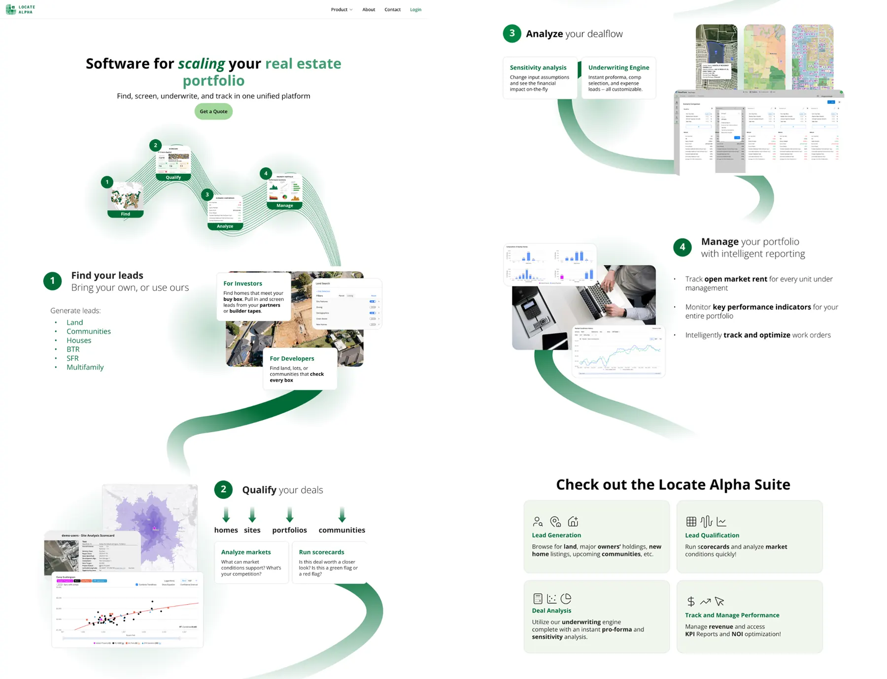
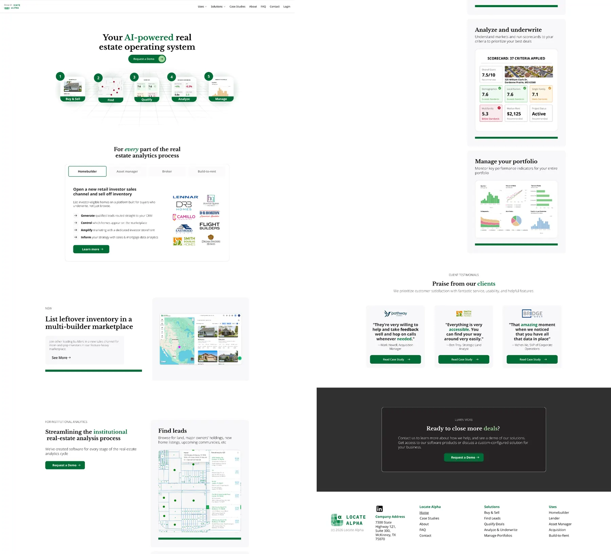
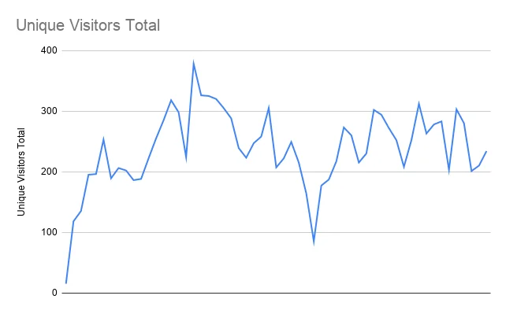
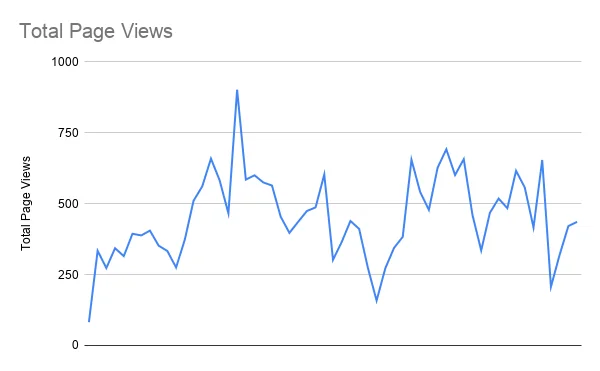

Locate Alpha Website and Branding
Generating leads and pulling in over a thousand visitors each month: a full website and brand system redesign for a growing real estate analytics company.
See it liveGenerating leads and pulling in over a thousand visitors each month: a full website and brand system redesign for a growing real estate analytics company.
See it live
I was tasked with transforming a 5-year-old, incomplete site into a sleek catalyst for growth.
The challenge. A growing real estate software analytics company needed to rebrand their outdated website that was confusing potential clients, discouraging investors, and misrepresenting their evolved business model.
The impact. The redesign now attracts 1,100+ visitors each month, eliminated client confusion, increased professional credibility, and established a cohesive brand system used across all marketing materials.
I analyzed 63 successful real estate companies and software startups, discovering a key design tension:
This insight became crucial for balancing diverging design styles and positioning Locate Alpha at the intersection of both worlds.

Working within corporate constraints, I collaborated with the sales team to identify common user frustrations that were costing the company real opportunities:
Contradictory wording led to lost deals as potential clients couldn't understand what the product actually did.
Visitors were not encouraged to contact sales: the site had no clear conversion path.
Investors were openly "embarrassed" of the site, undermining the company's credibility in sales conversations.
Competitors posed as prospects to copy company information: full product screenshots were publicly visible.
Successful landing pages had intuitive layouts that balanced user expectations with unique graphics. I planned space for branding assets within each layout while deliberately avoiding AI-generated site patterns that give pages a cheap, generic appearance.


This design helped the team settle on what information to prioritize. It surfaced both wins and remaining problems:
Multiple buttons led to the contact page, giving visitors a clear path to reach the sales team.
Colors and fonts provided visual hierarchy, creating a more professional and scannable layout.
Flashy catchphrases still didn't clearly explain the company's core offerings to new visitors.
Full product screenshots still exposed the company UI to competitors posing as prospects.

I readjusted the layout to be easier to scan and added an FAQ page, more product pages, and solution pages. This time, I focused on revamping content to be user-specific, even when one product appealed to multiple user types.
Visitors can identify with clear user groups and jump directly to pages with information specific to their goals.
Real estate–specific terminology shows that we know what we are talking about, building trust with informed buyers.

1.1k+
unique visitors per month
20
qualified leads generated
100%
reduction in UI-related complaints


While creating my third iteration, I examined Hotjar recordings and Framer analytics and realized that the beautiful graphics of our website were not helping visitors answer the core question: "Is this a legitimate product?" I removed decorative linework and adopted a simpler, easier-to-skim style, especially important since many users spent less than a minute on the home page.
Unlike my courses in college, there was limited access to direct user feedback in this fast-paced startup environment. Instead of traditional user interview methodology, I gathered stakeholder insights and implemented post-launch analytics. Sometimes "no complaints" is the best success metric when transitioning from an underdeveloped baseline.
I wanted to prove myself by creating as many polished, high-fidelity designs as possible. But my perfectionism bogged down the process. Six roughly designed options easily triumphs three pixel-perfect ones; the final result was usually a mish-mash of multiple designs anyway. In the future, I will prioritize rapid iteration and collaborative refinement over individual perfection.
Despite available AI tools, authentic and clear copywriting remained the most critical factor for user comprehension and trust. I spent too much time on aesthetics. Focused content strategy delivered more value than purely visual improvements.
While the company needed more consistent branding, creating an entirely new design style risked exacerbating the problem. To avoid this, I renovated older materials while also making new assets easier for other employees to use, through email and PowerPoint templates, and one-pagers and webpages for every product and use case. Making branding consistent was now as easy as attaching a file or pasting a link.
This project established a foundation for the company's continued growth and professional positioning. The design system continues to guide marketing efforts, and the analytics implementation provides ongoing insights for future optimizations.
This project taught me the importance of balancing user needs, business constraints, and stakeholder feedback in a real-world corporate environment. Great design isn't just about beautiful interfaces; it's about solving actual business problems through thoughtful design decisions.